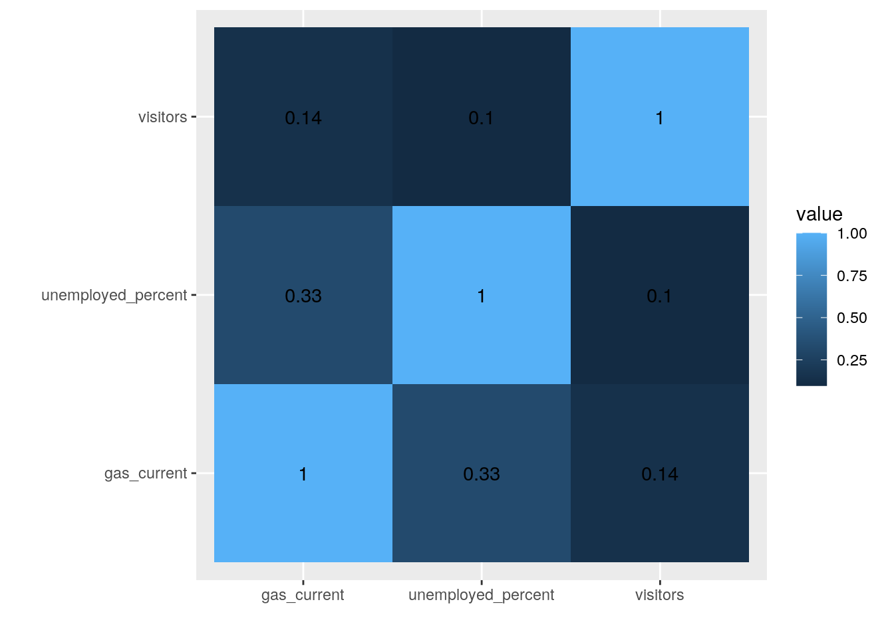
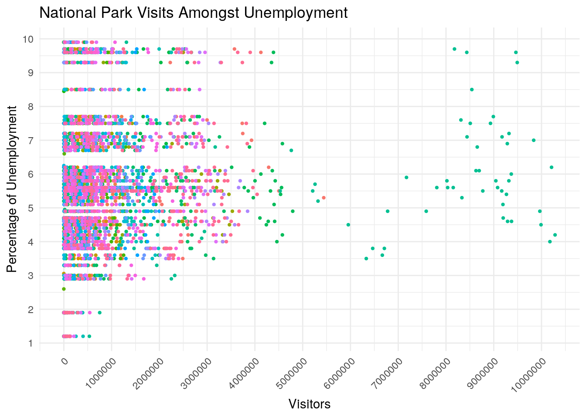
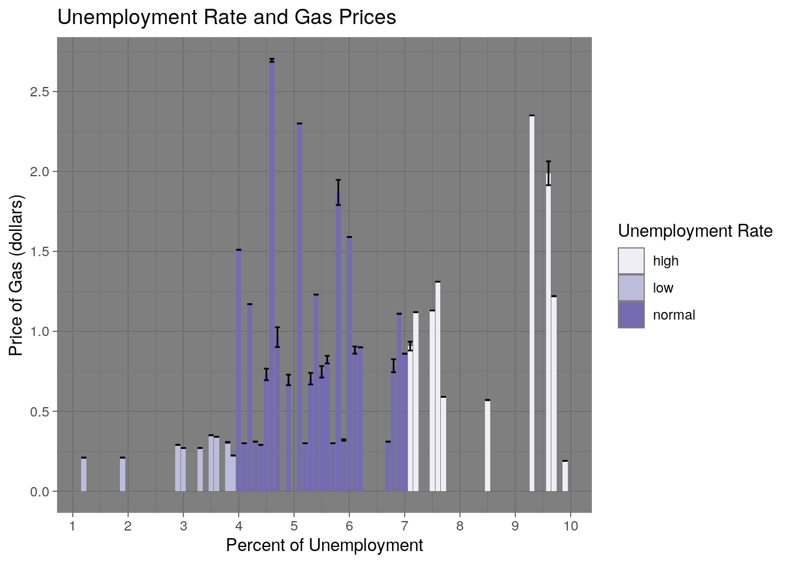
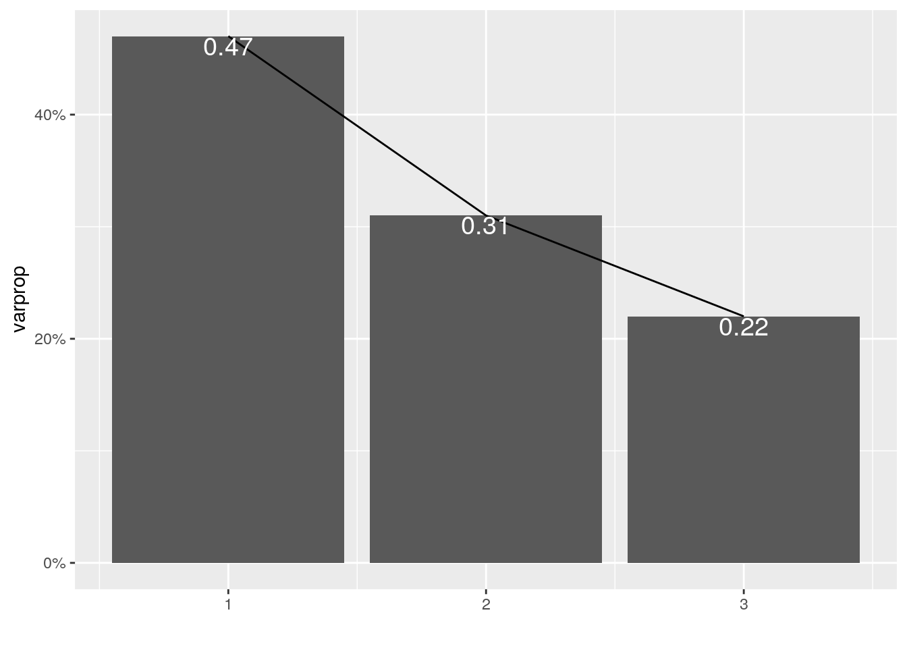
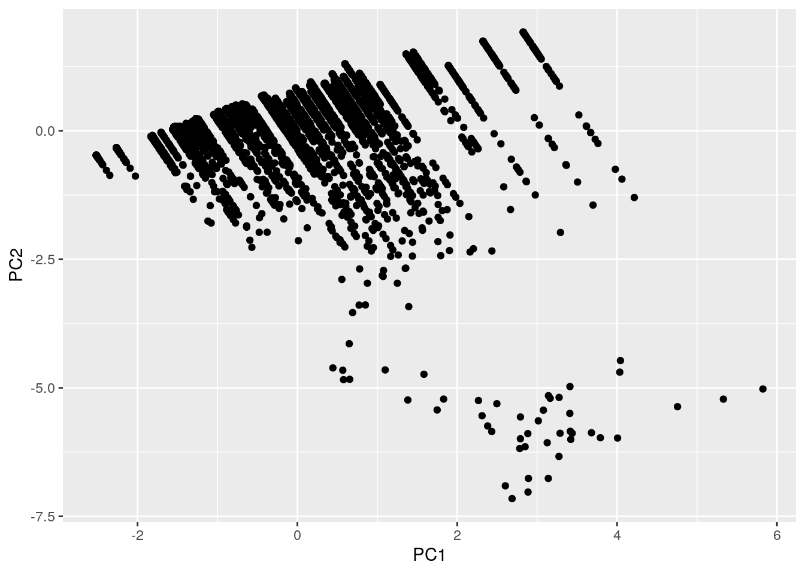
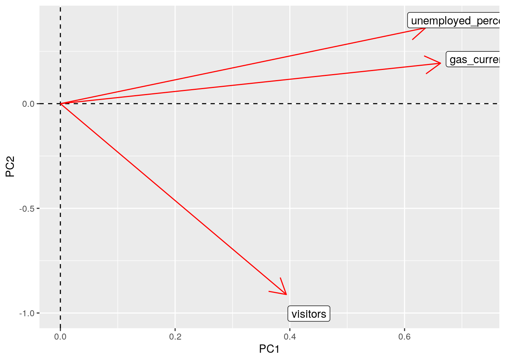

The datasets I chose for this project consist of information regarding national parks, unemployment rate, and gas prices. The national park dataset contains annual visitation numbers for each park from 1904 to 2016 in addition to the state and region the park resides in, its geometry, and ID number. The Unemployment dataset contains the percentage of unemployment for each year from 1941-2010 in addition to other information regarding population numbers, labor force, and percentage of employment. The gas prices dataset contains average gas prices in the US from the years 1929-2015. These datasets were acquired from github.com and datahub.io when searching for national park information and annual unemployment rates. I chose these datasets because I'm interested in national parks, and one day I wish to travel to all of them, so my search started out by finding information on national parks. I then expanded it to unemployment rate and gas price because I was interested to see if there was any correlation between them and the amount of people that visited the parks. I expect to see some association between different levels of unemployment and park visitors, and also a possible association between the price of gas and park visitors.
After uploading the datasets into my environment, the year column for the "employed" and "park_visits" datasets needed to be changed to a numeric so that both columns were compatible to join. The "gas_price" and "unemployment" dataset were altered by taking out extra columns that were not relevant in what I wanted to test. All three datasets were joined using inner_join because I only wanted rows that matched by year across all three datasets, so my resulting data did not have new NAs introduced. The only cases that were dropped were ones outside of the year 1941-2010. The dropping of those cases may potentially affect how strong the corellations between the numeric values are, but there should be enough data in the resulting dataset so that the absence of those cases is not substantial.
library(tidyverse)
park_visits <- readr::read_csv("https://raw.githubusercontent.com/rfordatascience/tidytuesday/master/data/2019/2019-09-17/national_parks.csv")
gas_price <- readr::read_csv("https://raw.githubusercontent.com/rfordatascience/tidytuesday/master/data/2019/2019-09-17/gas_price.csv")
unemployment <- readr::read_csv("https://pkgstore.datahub.io/core/employment-us/aat1_csv/data/d7e5ec6ea0340e846fd84ae6a69519c2/aat1_csv.csv")
gprice <- gas_price %>% select(-gas_constant)
unemployed <- unemployment %>% select("year", "unemployed_percent")
unemployed$year <- as.numeric(as.character(unemployed$year))
park_visits$year <- as.numeric(as.character(park_visits$year))
mydata <- unemployed %>% inner_join(park_visits) %>% inner_join(gprice)
glimpse(mydata)## Rows: 17,650
## Columns: 14
## $ year <dbl> 1941, 1941, 1941, 1941, 1941, 1941, 1941, 1941, 19…
## $ unemployed_percent <dbl> 9.9, 9.9, 9.9, 9.9, 9.9, 9.9, 9.9, 9.9, 9.9, 9.9, …
## $ gnis_id <chr> "1531834", "1009494", "985324", "1177725", "806297…
## $ geometry <chr> "MULTIPOLYGON", "MULTIPOLYGON", "POLYGON", "MULTIP…
## $ metadata <chr> NA, NA, NA, NA, "http://nrdata.nps.gov/programs/La…
## $ number_of_records <dbl> 1, 1, 1, 1, 1, 1, 1, 1, 1, 1, 1, 1, 1, 1, 1, 1, 1,…
## $ parkname <chr> "Lake Roosevelt", NA, NA, NA, "Little Bighorn Batt…
## $ region <chr> "PW", "NT", "SE", "NE", "IM", "MW", "SE", "NE", "S…
## $ state <chr> "WA", "NC", "NC", "PA", "MT", "NE", "SC", "NY", "G…
## $ unit_code <chr> "LARO", "BLRI", "FORA", "INDE", "LIBI", "HOME", "F…
## $ unit_name <chr> "Lake Roosevelt National Recreation Area", "Blue R…
## $ unit_type <chr> "National Recreation Area", "Parkway", "National H…
## $ visitors <dbl> 0, 895874, 79049, 2862, 67953, 1400, 0, 0, 0, 0, 0…
## $ gas_current <dbl> 0.19, 0.19, 0.19, 0.19, 0.19, 0.19, 0.19, 0.19, 0.…After the dataset was joined, I filtered out the observations to only show "National Parks", and I removed irrelevant columns to make the data easier to read. I then arranged the data alphabetically by the park name and by descending year to show more recent years at the top. A new variable was created from the "unemployed_percent" to show the unemployment rate as a category, so it is easier to distinguish if that year had a low, normal, or high unemployment rate.
mydata <- mydata %>% filter(str_detect(unit_type, "National Park"),
unit_type == "National Park")
mydata <- mydata %>% select(-metadata, -number_of_records, -unit_code)
mydata <- mydata %>% arrange(unit_name, desc(year))
mydata <- mydata %>% mutate(unemployment_cat = case_when(unemployed_percent >
7 ~ "high", unemployed_percent <= 7 & 4 <= unemployed_percent ~
"normal", unemployed_percent < 4 ~ "low"))
glimpse(mydata)## Rows: 3,652
## Columns: 12
## $ year <dbl> 2010, 2009, 2008, 2007, 2006, 2005, 2004, 2003, 20…
## $ unemployed_percent <dbl> 9.6, 9.3, 5.8, 4.6, 4.6, 5.1, 5.5, 6.0, 5.8, 4.7, …
## $ gnis_id <chr> "578853", "578853", "578853", "578853", "578853", …
## $ geometry <chr> "MULTIPOLYGON", "MULTIPOLYGON", "MULTIPOLYGON", "M…
## $ parkname <chr> NA, NA, NA, NA, NA, NA, NA, NA, NA, NA, NA, NA, NA…
## $ region <chr> "NE", "NE", "NE", "NE", "NE", "NE", "NE", "NE", "N…
## $ state <chr> "ME", "ME", "ME", "ME", "ME", "ME", "ME", "ME", "M…
## $ unit_name <chr> "Acadia National Park", "Acadia National Park", "A…
## $ unit_type <chr> "National Park", "National Park", "National Park",…
## $ visitors <dbl> 2504208, 2227698, 2075857, 2202228, 2083588, 20514…
## $ gas_current <dbl> 2.79, 2.35, 3.27, 2.80, 2.59, 2.30, 1.88, 1.59, 1.…
## $ unemployment_cat <chr> "high", "high", "normal", "normal", "normal", "nor…The summary statistics resulted in Great Smoky Mountains National Park has the highest average number of visitors across all years, and also the highest number of variance and standard deviation. Across the different unemployment rates, higher unemployment rates resulted in a higher average number of visitors across all parks. This could be due to the fact that more people do not have a job they have to report to, so they have time to go to a national park.The state of California has the most observations of national parks, but North Carolina has the largest average number of visitors at the parks that reside in that state. The summary statistics for the data grouped by state was spread wider using pivot_wider so that each state corresponds to an individual value for each statistic, and then the data was gathered using pivot_longer to tidy the data so that there are only two columns. Summary statistics for the data overall revealed that the average unemployment rate is 5.6%, the average number of visitors is 851,028,and the 80th percentile of visitors is 1,056,273 with the unemployment rate being 6.8% and the price of gas being $1.19. There are also low correlations between number of visitors and unemployment percent and between visitors and gas prices being 0.0969 and 0.145, respectively.
mydata %>% group_by(unit_name, state) %>% summarize(mean_visitors = mean(visitors,
na.rm = T), sd_visitors = sd(visitors, na.rm = T), n(), var_visitors = var(visitors,
na.rm = T), min_visitors = min(visitors, na.rm = T), max_visitors = max(visitors,
na.rm = T), median_visitors = median(visitors, na.rm = T)) %>%
arrange(desc(mean_visitors)) %>% tibble## # A tibble: 61 x 9
## unit_name state mean_visitors sd_visitors `n()` var_visitors min_visitors
## <chr> <chr> <dbl> <dbl> <int> <dbl> <dbl>
## 1 Great Sm… NC 6444808. 3226883. 71 1.04e13 383116
## 2 Grand Ca… AZ 2433082. 1496870. 71 2.24e12 64568
## 3 Yosemite… CA 2242427. 1152875. 71 1.33e12 116682
## 4 Rocky Mo… CO 2136912. 823646. 71 6.78e11 124353
## 5 Yellowst… WY 2088743. 855565. 71 7.32e11 61696
## 6 Cuyahoga… OH 2065737. 1087364. 33 1.18e12 496400
## 7 Acadia N… ME 2026889. 1194398. 71 1.43e12 8246
## 8 Olympic … WA 1998371. 1140328. 71 1.30e12 56076
## 9 Grand Te… WY 1828362. 974262. 71 9.49e11 8203
## 10 Shenando… VA 1617563. 561522. 71 3.15e11 41831
## # … with 51 more rows, and 2 more variables: max_visitors <dbl>,
## # median_visitors <dbl>mydata %>% group_by(unemployment_cat) %>% summarize(mean_visitors = mean(visitors,
na.rm = T), sd_visitors = sd(visitors, na.rm = T), n(), var_visitors = var(visitors,
na.rm = T), min_visitors = min(visitors, na.rm = T), max_visitors = max(visitors,
na.rm = T), median_visitors = median(visitors, na.rm = T)) %>%
tibble## # A tibble: 3 x 8
## unemployment_cat mean_visitors sd_visitors `n()` var_visitors min_visitors
## <chr> <dbl> <dbl> <int> <dbl> <dbl>
## 1 high 950938. 1341024. 724 1.80e12 0
## 2 low 470121. 775518. 590 6.01e11 0
## 3 normal 916213. 1288054. 2338 1.66e12 0
## # … with 2 more variables: max_visitors <dbl>, median_visitors <dbl>mydata %>% group_by(state) %>% summarize(mean_visitors = mean(visitors,
na.rm = T), sd_visitors = sd(visitors, na.rm = T), n_ = n(),
var_visitors = var(visitors, na.rm = T), min_visitors = min(visitors,
na.rm = T), max_visitors = max(visitors, na.rm = T),
median_visitors = median(visitors, na.rm = T)) %>% pivot_wider(names_from = "state",
values_from = contains("_")) %>% pivot_longer(contains("_")) %>%
tibble## # A tibble: 189 x 2
## name value
## <chr> <dbl>
## 1 mean_visitors_AK 118874.
## 2 mean_visitors_AR 1106453.
## 3 mean_visitors_AS 2840.
## 4 mean_visitors_AZ 1170791.
## 5 mean_visitors_CA 697830.
## 6 mean_visitors_CO 723100.
## 7 mean_visitors_FL 388423.
## 8 mean_visitors_HI 956727.
## 9 mean_visitors_KY 1144862.
## 10 mean_visitors_ME 2026889.
## # … with 179 more rowsmydata %>% summarize_if(is.numeric, mean, na.rm = T) %>% tibble## # A tibble: 1 x 4
## year unemployed_percent visitors gas_current
## <dbl> <dbl> <dbl> <dbl>
## 1 1978. 5.64 851028. 0.931mydata %>% summarize_if(is.numeric, sd, na.rm = T) %>% tibble## # A tibble: 1 x 4
## year unemployed_percent visitors gas_current
## <dbl> <dbl> <dbl> <dbl>
## 1 19.9 1.77 1242285. 0.738mydata %>% summarize_if(is.numeric, min, na.rm = T) %>% tibble## # A tibble: 1 x 4
## year unemployed_percent visitors gas_current
## <dbl> <dbl> <dbl> <dbl>
## 1 1941 1.2 0 0.19mydata %>% summarize_if(is.numeric, quantile, na.rm = T) %>%
tibble## # A tibble: 5 x 4
## year unemployed_percent visitors gas_current
## <dbl> <dbl> <dbl> <dbl>
## 1 1941 1.2 0 0.19
## 2 1962 4.5 130028. 0.31
## 3 1980 5.5 457537 0.86
## 4 1995 6.8 1056273. 1.19
## 5 2010 9.9 10283598 3.27mydata %>% summarize_if(is.numeric, max, na.rm = T) %>% tibble## # A tibble: 1 x 4
## year unemployed_percent visitors gas_current
## <dbl> <dbl> <dbl> <dbl>
## 1 2010 9.9 10283598 3.27mydata %>% summarize_if(is.character, n_distinct) %>% tibble## # A tibble: 1 x 8
## gnis_id geometry parkname region state unit_name unit_type unemployment_cat
## <int> <int> <int> <int> <int> <int> <int> <int>
## 1 60 2 54 7 27 61 1 3mydata %>% summarize(cor(visitors, unemployed_percent, use = "pair")) %>%
tibble## # A tibble: 1 x 1
## `cor(visitors, unemployed_percent, use = "pair")`
## <dbl>
## 1 0.0969mydata %>% summarize(cor(visitors, gas_current, use = "pair")) %>%
tibble## # A tibble: 1 x 1
## `cor(visitors, gas_current, use = "pair")`
## <dbl>
## 1 0.145The correlation heatmap shows that there is a slightly stronger correlation between unemployment rate and gas prices, but overall, there are no significant correlations found between the numeric variables in the dataset. All correlations reside closer to to zero, so the correlation is weak.
mydata %>% select(-year) %>% select_if(is.numeric) %>% cor %>%
as.data.frame %>% rownames_to_column %>% pivot_longer(-1) %>%
ggplot(aes(rowname, name, fill = value)) + geom_tile() +
geom_text(aes(label = round(value, 2))) + xlab("") + ylab("") +
coord_fixed()
The plot of the relationship of park visitors and unemployment rate shows that only higher numbers of visiors occur when the unemployment rate is normal or high. This could mean that people choose to visit national parks when they have more time to do so. Another trend seen in the graph is that most visitors are under 4,000,000 regardless of the unemployment rate which is why there was no correlation seen in the previous heatmap between the two variables.
options(scipen = 999)
ggplot(mydata, aes(visitors, unemployed_percent)) + geom_point(aes(color = unit_name),
size = 0.8, stat = "summary") + theme_minimal() + theme(legend.position = "none") +
ggtitle("National Park Visits Amongst Unemployment") + ylab("Percentage of Unemployment") +
xlab("Visitors") + scale_x_continuous(breaks = seq(0, 1e+07,
1e+06)) + scale_y_continuous(breaks = seq(0, 10, 1)) + theme(axis.text.x = element_text(angle = 45,
hjust = 1))
The plot of the relationship between unemployment rate and gas prices shows that gas prices are at there highest in normal and higher unemployment rates. Inflation has played a huge role in the price of gas which is why it was so low 80 years ago in addition to having lower unemployment rates. The lack of a strong relationship in the plot demonstrates how there is a low correlation between these two variables which is also seen in the heatmap above.
options(scipen = 999)
ggplot(mydata, aes(x = unemployed_percent, y = gas_current, fill = unemployment_cat)) +
geom_bar(stat = "summary") + geom_errorbar(stat = "summary") +
theme_dark() + ggtitle("Unemployment Rate and Gas Prices") +
ylab("Price of Gas (dollars)") + xlab("Percent of Unemployment") +
labs(fill = "Unemployment Rate") + scale_fill_brewer(palette = "Purples") +
scale_x_continuous(breaks = seq(0, 10, 1)) + scale_y_continuous(breaks = seq(0,
3, 0.5))
The first two PCs account for 72% of total variability. A scree plot was created to deterine how many PCs to keep, and the resulting plot showed that only the first one should be kept because after the first one, that is when the scree plot begins to flatten. In PC1, gas prices have the highest score compared to the other two numeric variables meaning that there is greater variance in gas prices. in PC2, percentage of unemployment is higher than gas prices so there is greater variance in unemployment than there is in gas prices. In PC3, percentage of unemployment is higher than visitors which indicates that there is greater variance in unmployment than there is in number of visitors of the parks. The Great Smoky Mountains National Park scored the highest in PC1 and PC3 and the lowest in PC2. The Capitol Reef National Park scored the lowest on PC1, and the Kobuk Valley National Park scored the highest in PC2 and the lowest in PC3. The plot of loadings reveals that percentage of unemployment and gas prices contribute more to the variations in PC2, while visitors contributes to the variations in PC1.
mydata_pca1 <- mydata %>% select(unit_name, unemployed_percent,
visitors, gas_current)
mydata_nums <- mydata_pca1 %>% select_if(is.numeric) %>% scale
rownames(mydata_nums) <- mydata_pca1$unit_name
mydata_pca2 <- princomp(mydata_nums)
names(mydata_pca2)## [1] "sdev" "loadings" "center" "scale" "n.obs" "scores" "call"summary(mydata_pca2, loadings = T)## Importance of components:
## Comp.1 Comp.2 Comp.3
## Standard deviation 1.1831456 0.9646265 0.8178268
## Proportion of Variance 0.4667389 0.3102531 0.2230080
## Cumulative Proportion 0.4667389 0.7769920 1.0000000
##
## Loadings:
## Comp.1 Comp.2 Comp.3
## unemployed_percent 0.637 0.363 0.680
## visitors 0.394 -0.912 0.117
## gas_current 0.663 0.193 -0.7231.1831456 + 0.9646265 + 0.8178268## [1] 2.965599(1.1831456 + 0.9646265)/2.9655## [1] 0.7242529eigval <- mydata_pca2$sdev^2
varprop = round(eigval/sum(eigval), 2)
ggplot() + geom_bar(aes(y = varprop, x = 1:3), stat = "identity") +
xlab("") + geom_path(aes(y = varprop, x = 1:3)) + geom_text(aes(x = 1:3,
y = varprop, label = round(varprop, 2)), vjust = 1, col = "white",
size = 5) + scale_y_continuous(breaks = seq(0, 0.6, 0.2),
labels = scales::percent) + scale_x_continuous(breaks = 1:10)
mydata_df <- data.frame(PC1 = mydata_pca2$scores[, 1], PC2 = mydata_pca2$scores[,
2])
ggplot(mydata_df, aes(PC1, PC2)) + geom_point()
mydata_pca2$scores[, 1:3] %>% as.data.frame %>% top_n(3, Comp.1)## Comp.1 Comp.2 Comp.3
## Great.Smoky.Mountains.National.Park 5.824236 -5.022676 0.5097584
## Great.Smoky.Mountains.National.Park.1 5.329762 -5.219952 0.8286906
## Great.Smoky.Mountains.National.Park.2 4.755662 -5.367276 -1.4609837mydata_pca2$scores[, 1:3] %>% as.data.frame %>% top_n(-3, Comp.1)## Comp.1 Comp.2 Comp.3
## Capitol.Reef.National.Park.65 -2.516455 -0.4747174 -1.080455
## Denali.National.Park.67 -2.516455 -0.4747174 -1.080455
## Denali.National.Preserve.67 -2.516455 -0.4747174 -1.080455
## Dry.Tortugas.National.Park.67 -2.516455 -0.4747174 -1.080455
## Theodore.Roosevelt.National.Park.67 -2.516455 -0.4747174 -1.080455mydata_pca2$scores[, 1:3] %>% as.data.frame %>% top_n(3, wt = Comp.2)## Comp.1 Comp.2 Comp.3
## Kobuk.Valley.National.Park 2.824652 1.919858 -0.3827276
## Lake.Clark.National.Park 2.826798 1.914892 -0.3820892
## National.Park.of.American.Samoa 2.824602 1.919974 -0.3827425mydata_pca2$scores[, 1:3] %>% as.data.frame %>% top_n(3, wt = desc(Comp.2))## Comp.1 Comp.2 Comp.3
## Great.Smoky.Mountains.National.Park.10 2.885413 -7.027956 -0.3195891
## Great.Smoky.Mountains.National.Park.11 2.685990 -7.155230 0.1009408
## Great.Smoky.Mountains.National.Park.12 2.601769 -6.906721 0.2963732mydata_pca2$scores[, 1:3] %>% as.data.frame %>% top_n(3, Comp.3)## Comp.1 Comp.2 Comp.3
## Great.Smoky.Mountains.National.Park.70 1.0104634 0.3405512 2.406163
## Rocky.Mountain.National.Park.70 0.8112634 0.8015994 2.346894
## Shenandoah.National.Park.70 0.9347152 0.5158704 2.383625mydata_pca2$scores[, 1:3] %>% as.data.frame %>% top_n(-3, Comp.3)## Comp.1 Comp.2 Comp.3
## Kobuk.Valley.National.Park.2 1.888589 1.2685581 -2.314043
## Kobuk.Valley.National.Park.3 1.034341 0.9000793 -2.314253
## National.Park.of.American.Samoa.2 1.889261 1.2670038 -2.313843mydata_pca1 %>% filter(unit_name %in% c("Great Smoky Mountains National Park"))## # A tibble: 71 x 4
## unit_name unemployed_percent visitors gas_current
## <chr> <dbl> <dbl> <dbl>
## 1 Great Smoky Mountains National Park 9.6 9463538 2.79
## 2 Great Smoky Mountains National Park 9.3 9491437 2.35
## 3 Great Smoky Mountains National Park 5.8 9044010 3.27
## 4 Great Smoky Mountains National Park 4.6 9372253 2.8
## 5 Great Smoky Mountains National Park 4.6 9289215 2.59
## 6 Great Smoky Mountains National Park 5.1 9192477 2.3
## 7 Great Smoky Mountains National Park 5.5 9167046 1.88
## 8 Great Smoky Mountains National Park 6 9366845 1.59
## 9 Great Smoky Mountains National Park 5.8 9316420 1.36
## 10 Great Smoky Mountains National Park 4.7 9197697 1.46
## # … with 61 more rowsmydata_pca1 %>% filter(unit_name %in% c("Capitol Reef National Park",
"Denali National Park ", "Denali National Preserve "))## # A tibble: 69 x 4
## unit_name unemployed_percent visitors gas_current
## <chr> <dbl> <dbl> <dbl>
## 1 Capitol Reef National Park 9.6 662661 2.79
## 2 Capitol Reef National Park 9.3 617208 2.35
## 3 Capitol Reef National Park 5.8 604811 3.27
## 4 Capitol Reef National Park 4.6 554907 2.8
## 5 Capitol Reef National Park 4.6 511511 2.59
## 6 Capitol Reef National Park 5.1 550255 2.3
## 7 Capitol Reef National Park 5.5 549708 1.88
## 8 Capitol Reef National Park 6 535441 1.59
## 9 Capitol Reef National Park 5.8 525646 1.36
## 10 Capitol Reef National Park 4.7 527760 1.46
## # … with 59 more rowsmydata_pca1 %>% filter(unit_name %in% c("Kobuk Valley National Park ",
"Lake Clark National Park ", "National Park of American Samoa "))## # A tibble: 0 x 4
## # … with 4 variables: unit_name <chr>, unemployed_percent <dbl>,
## # visitors <dbl>, gas_current <dbl>mydata_pca1 %>% filter(unit_name %in% c("Great Smoky Mountains National Park"))## # A tibble: 71 x 4
## unit_name unemployed_percent visitors gas_current
## <chr> <dbl> <dbl> <dbl>
## 1 Great Smoky Mountains National Park 9.6 9463538 2.79
## 2 Great Smoky Mountains National Park 9.3 9491437 2.35
## 3 Great Smoky Mountains National Park 5.8 9044010 3.27
## 4 Great Smoky Mountains National Park 4.6 9372253 2.8
## 5 Great Smoky Mountains National Park 4.6 9289215 2.59
## 6 Great Smoky Mountains National Park 5.1 9192477 2.3
## 7 Great Smoky Mountains National Park 5.5 9167046 1.88
## 8 Great Smoky Mountains National Park 6 9366845 1.59
## 9 Great Smoky Mountains National Park 5.8 9316420 1.36
## 10 Great Smoky Mountains National Park 4.7 9197697 1.46
## # … with 61 more rowsmydata_pca2$loadings[1:3, 1:2] %>% as.data.frame %>% rownames_to_column %>%
ggplot() + geom_hline(aes(yintercept = 0), lty = 2) + geom_vline(aes(xintercept = 0),
lty = 2) + ylab("PC2") + xlab("PC1") + geom_segment(aes(x = 0,
y = 0, xend = Comp.1, yend = Comp.2), arrow = arrow(), col = "red") +
geom_label(aes(x = Comp.1 * 1.1, y = Comp.2 * 1.1, label = rowname))
```